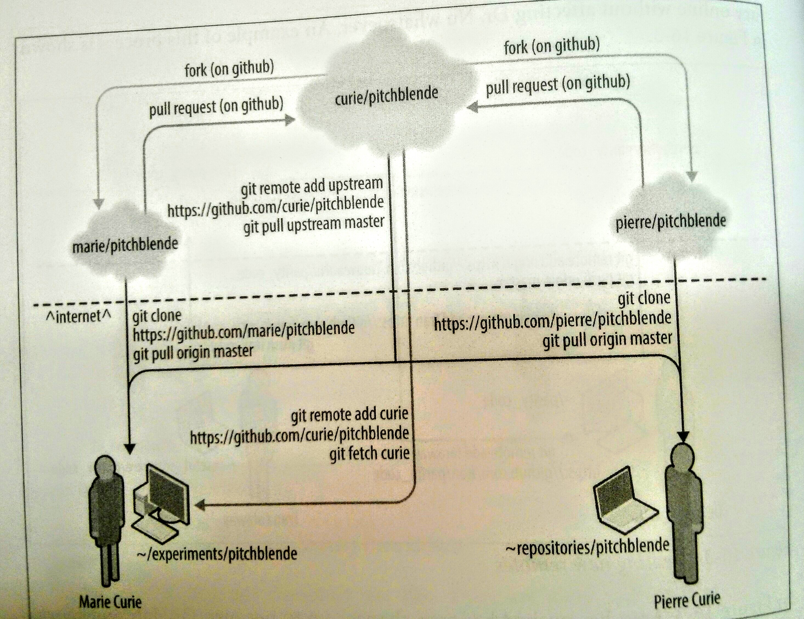

Let
Git & GitHub
work for you
----
Liang Shi
Nov 23, 2015
Version control
Version control
is a way to:
- Back up changing files
- Store and access an annotated history
- Manage merging of changes between different change sets
Version control
Categorization 1
- Centralized: Subversion (
svn) - Distributed: Git (
git)


Version control
Categorization 2
Good News
GitHub Desktop for both MacBook and Windows
Github
More features
- Landing page support
- Wiki support
- Network graphs and time histories of commits
- Code browser with syntax highlighting
- Issue (ticket) tracking
- User downloads
- ...
Github
case 1 FiPy
Github
case 2 Fire Dynamic Simulator
Github Mechanism
Our project: Wind OpenFoam
NIST GitHub
NIST GitHub Organization membership
(USNISTGOV)
https://inet.nist.gov/odi/githubNIST GitHub rules
Points to pay attention:
- Use institute email: FIRSTNAME.LASTNAME@nist.gov
- Enable two-way authentification
- Upload SSH public key to your account
References
for Git & GitHub
- Try Git (http://try.github.com)
- Pro Git Book (http://git-scm.com/book/en/v2)
- Software Carpentry's Git Lessons (http://swcarpentry.github.io/git-novice/)
- Software Carpentry quick reference (http://swcarpentry.github.io/git-novice/reference.html)
References
for computational scientists

Questions?
Slides website: liangshi7.github.io/gitHub-Workshop